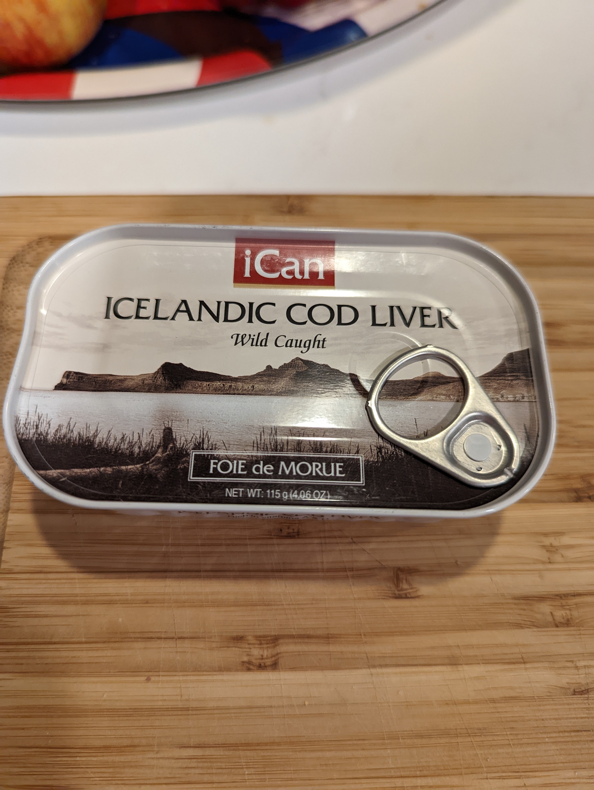
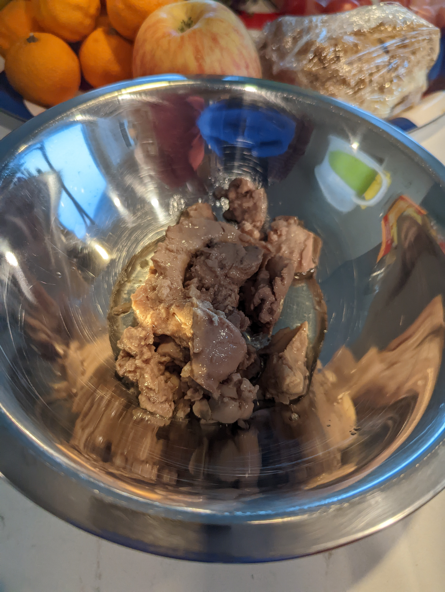
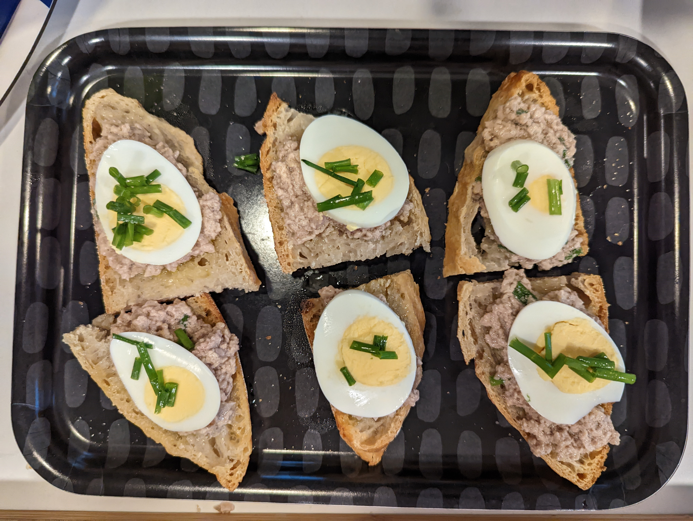

Family visited recently and left us with nine cans of Icelandic Cod Liver. Why nine you ask? Well they had a box of twelve sent ahead of their visit and ate three of them while staying with us.

I texted a picture of my undeserved hepatic lode of Northern Atlantic goodness to med school friends and promised culinary updates in my pursuit of full turn over of the cupboard inventory. Well, it is just too good of a joke to not take seriously. The tin also is a bit inspirational with the brand name “iCan”.
I’m not a spicy food fanatic, but other than that I am try to be game for trying something at least once.
The process of getting these fish livers to me in tidy little tins is probably worthy of its own write up, but alas we will have to settle with Mara reviewing the end product.
ACT I
I opened the can up and it reminded me of cat food. Cat food I would be happy to feed to my hypothetical cat, but cat food nonetheless.

The first recipe was just the product of reviewing a few Google hits and synthesizing them into something that I had the ingredients for. Hard to even call it a recipe since it was so easy to do.
Cod liver on toast
- Can of cod liver, drained then mashed with fork
- Two hard boiled eggs, sliced
- Chopped chives, 1 teaspoon combined with cod liver, and 2 teaspoon reserved for garnish
- Squeeze of lemon juice into mashed cod liver
- Toast, buttered
- Salt to taste
Top toast with mashed cod liver. Add a slice of egg and top with chives. Enjoy!

Review – Totally fine! Good even. And looked fancy. I think a high end butter would elevate it. I happened to have a fresh loaf of sourdough bread at home, and that was a very nice combo. Would consider serving this at a party like a Russian style New Year’s Eve party with lots of small appetizers. Probably would not eat a ton of these, but certainly an interesting dish with good texture.

ACT II-IX
To be continued…